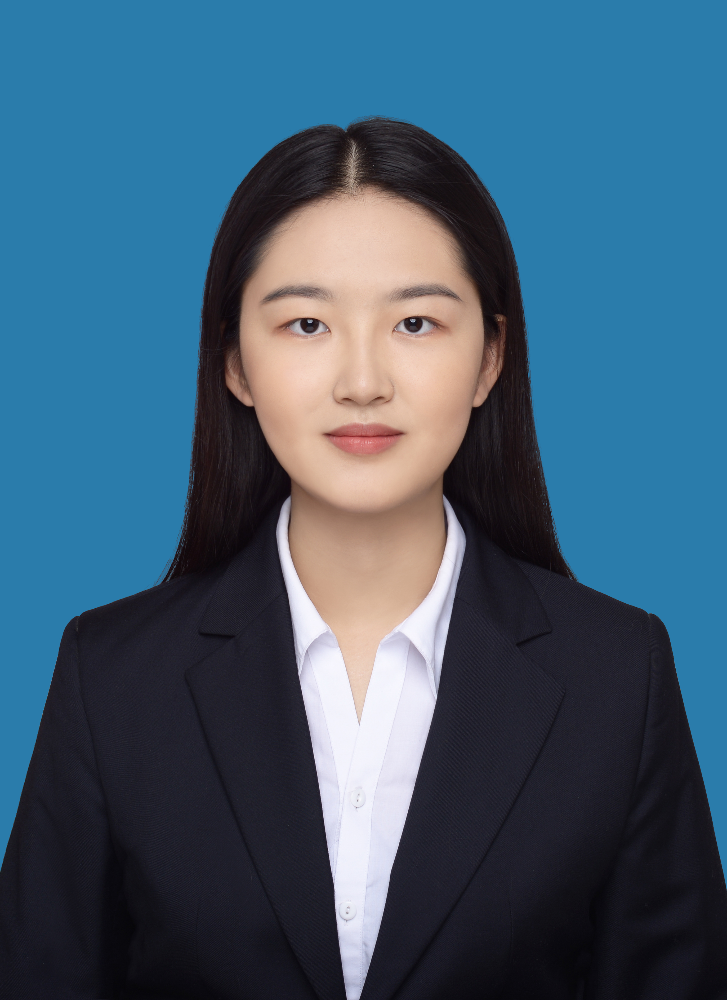
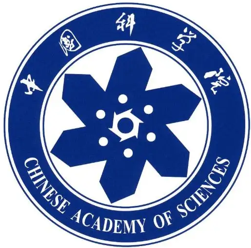
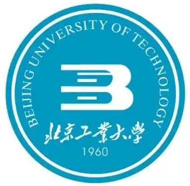

|  | M.Sc. Student, |
Currently I am currently a prospective graduate student who will enter UCAS in September 2022.
Before that, I got my B.Eng. degree (rank 1) in the School of Artificial Intelligence and Automation in June 2022 from Beijing University Of Technology(211). In the same year, I was admitted to study for a M.Sc degree in University of Chinese Academy of Sciences(UCAS) without entrance examination.
Research Interests: Machine learning, Self-supervised learning, Meta-learning, Migration learning, Robotics, etc..
|  | M. S., University of Chinese Academy of Sciences(UCAS), Beijing [2022.9 ~ 2025.7]
|
|  | B.Eng, Beijing University Of Technology, Beijing [2018.9 ~ 2022.7]
|
SO-PERM: Pose Estimation and Measurement Method for Tiny Objects
Jingyao Wang, Naigong Yu. IEEE international joint conference on neural networks (IJCNN), 2022.
SSD-Faster Net：A Hybrid Network for Industrial Defect Inspection
Jingyao Wang, Naigong Yu. International Conference on Image Processing (ICIP), 2022.
UTD-Yolov5: A Real-time Underwater Targets Detection Method based on Attention Improved YOLOv5
Jingyao Wang, Naigong Yu. IEEE/RSJ International Conference on Intelligent Robots and Systems (IROS), 2022.
HDPP_A high-dimensional dynamic path planning method based on multi-scale regression positioning
Jingyao Wang, Xiaogang Ruan, Jing Huang. MDPI-Applied Sciences [SCI Q2], 2021.
Universal path planning based on search and machine vision
Jingyao Wang, Naigong Yu. Chinese Control Conference (CCC), 2021.
Gesture recognition matching based on dynamic skeleton
Jingyao Wang, Naigong Yu, Essaf Firdaous. Chinese Control and Decision Conference (CCDC), 2021.
基于Mask R-CNN与SG滤波的手势识别 [CN]
Jingyao Wang, Hongjun Wang. Journal of Electronic Measurement and Instrument(电子测量与仪器学报). [CSCD], 2020.
A machine vision-based speech output method for sign language recognition of deaf people
Naigong Yu, Jingyao Wang.
China Invention Patent, Application Number: 202110176544.3. [Under Review].
A waste collection and cleaning robot
Jingyao Wang.
China Invention Patent, Patent Publication Number: CN 108354535.
AIData-Data set creation helper
Jingyao Wang. Software Copyright Number: 2021SR1046884.
Computer Vision-based Hand Somatosensory Teleoperation Control Platform
Jingyao Wang, Bowen Leng. Software Copyright Number: 2021SR0004876.
"Explore the World"-Deep Learning Assistant and Migratable Platform
Jingyao Wang. Software Copyright Number: 2021SR0605795.
SmartFace-Lightweight Face Style Migration and Confrontation
Jingyao Wang. Software Copyright Number: 2021SR0605792.
New Vision-Intelligent Target Detection and Tracking
Jingyao Wang, Junkai Chen, Hongbo Shi, Tianqi Chu. Software Copyright Number: 2022SR2088408.
Research on Hand Gesture Recognition and Robot Telemanipulation (2018.10-2021.5)
Project (Student) Leader. National Natural Science Foundation of China (62076014).
Machine Vision-based Speech Interaction System for Sign Language Recognition (2019.5-2020.5)
Project Leader. National Innovation and Entrepreneurship Training program for College Students.
Research on Multimodal Affective Computing and Health Navigation (2021.3-2022.7).
Member;
Natural Science Foundation of China (61672068).
Research on Autonomous Following and Visual Condition Analysis of Medical Robots (2021.3-2022.7).
Person in Charge;
Subproject of 2019Plan of the Ministry of Science and Technology (G20190201031).
Aqrose Technology(2019.6-2019.8)
Algorithm Intern
Path planning, Navigation, SLAM algorithms.
Beijing Academy of Artificial Intelligence, BAAI (2021.9-2022.7)
Research Intern
Software Development for the Neuron Platform, which is used for Brain-inspired Computing.